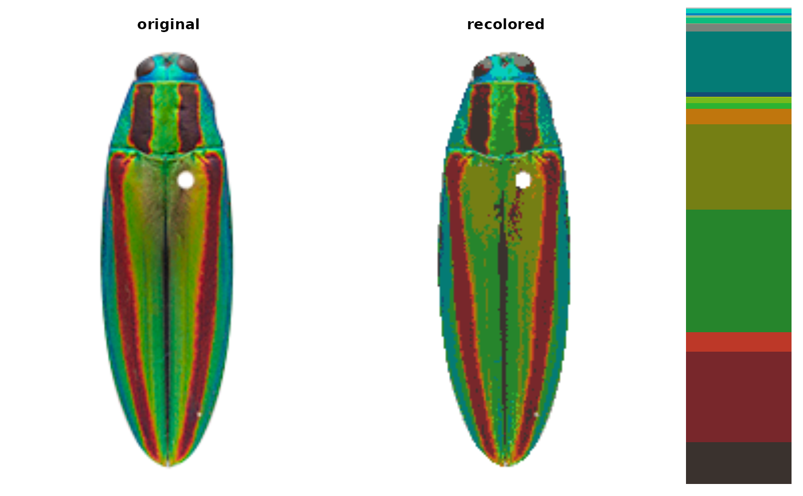
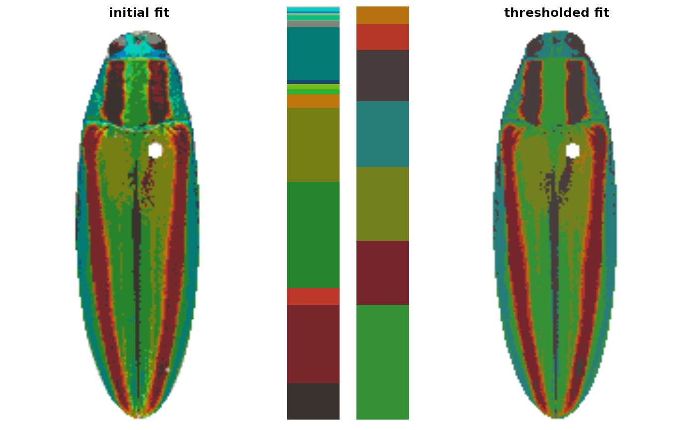
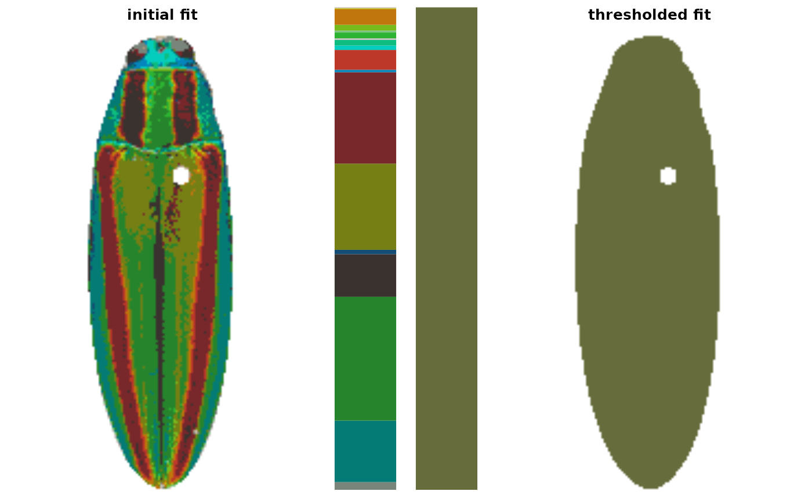

Drops color patches whose cumulative sum (as a proportion of total pixels
assigned) is equal to or less than pct, so that only the dominant
color patches remain, and refits the object with the reduced set of
color centers Useful for dropping spurious detail colors.
Arguments
- recolorize_obj
An object of class
recolorize.- pct
The proportion cutoff (0-1) for dropping color patches. The higher this value is, the more/larger color centers will be dropped.
- plotting
Logical. Plot the results?
- ...
Further arguments passed to imposeColors, which is called for refitting a new recolorize object for the reduced set of clusters.
Details
This function is fairly simple in execution: the color centers are
arranged by their sizes, largest to smallest, and their cumulative sum is
calculated. The minimum number of color centers to reach a cumulative sum
equal to or greater than the cutoff (1 - pct) is retained, and these
dominant colors are used to re-fit the image. Despite being
straightforward, this can be a surprisingly useful function.
Examples
img <- system.file("extdata/fulgidissima.png", package = "recolorize")
init_fit <- recolorize(img, bins = 3)
#>
#> Using 3^3 = 27 total bins

thresh_fit <- thresholdRecolor(init_fit, pct = 0.1)

# if you take it too far, you just get one color back:
thresh_fit_oops <- thresholdRecolor(init_fit, pct = 1)
